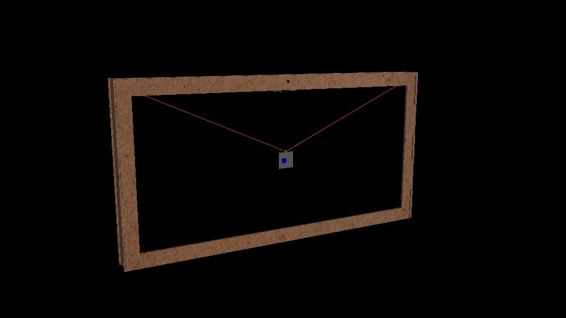
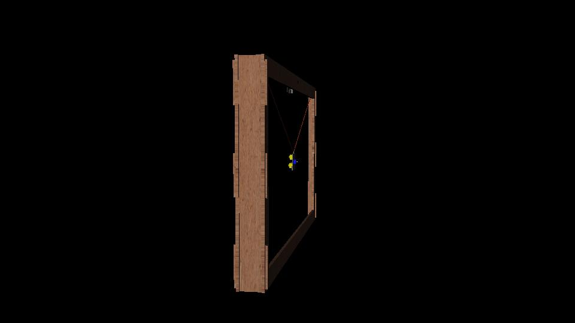
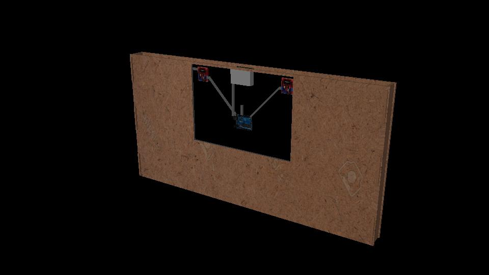
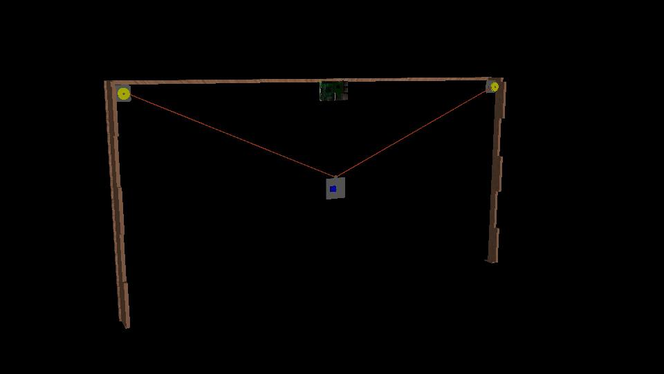
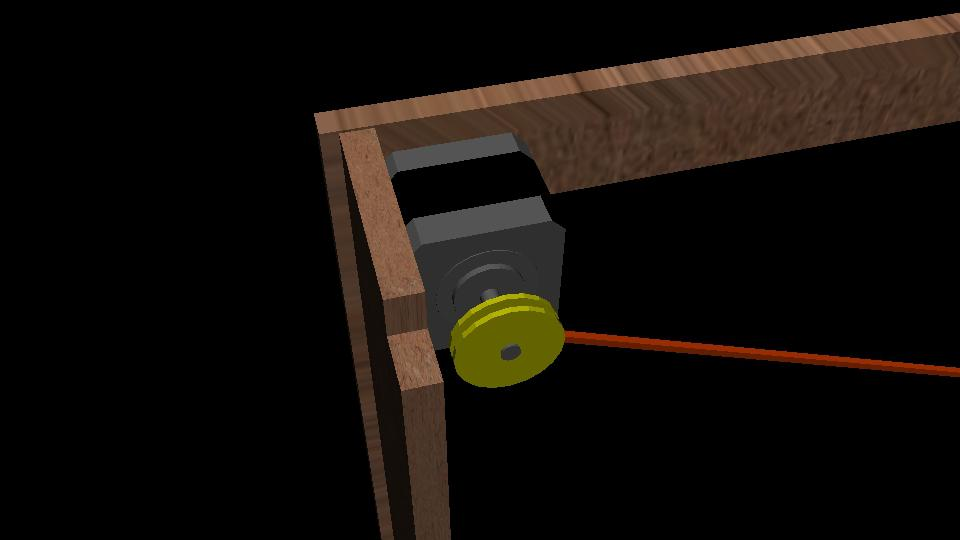
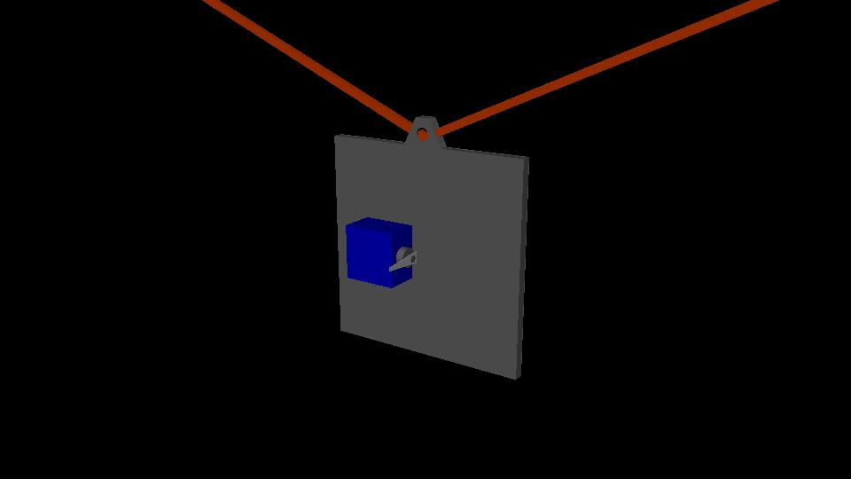
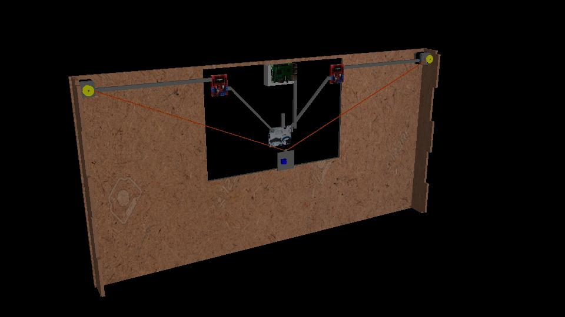
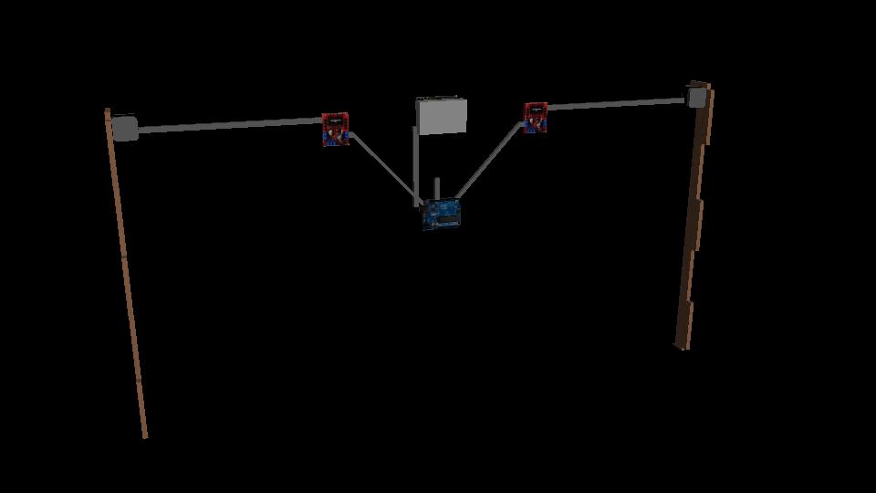

Machine Design//
At last the terrifying week of the beginning of a CNC came, in this first part we had to design a machine that includes mechanism + drive + automation.
The idea of this CNC is to create conceptual art, in what way ?, a point behind a canvas will rise to indicate a cursor, with videomapping follow this tip and create shapes and the cursor will be moved by a person using a camera using processing of images to be able to detect the face of the person, this will be interpreted in a plane X and Y which will be the CNC.
The mechanism is based on 2 pulleys, controlled by DC motors which by means of cables support an actuator that is the tip of the cursor. The drive is given by the face detection which will move the tip of the CNC and this will move the videomapping to follow the tip.
The automation is that once the code is executed there is no intervention, since the face of the person activates the mechanism.
Discussing with my team and after some sketches, the idea was not clear to us, so I decided to model the design in 3D, for it to use Maya 3D software, the results were the following.








Once we have thought about all the parts to use with the help of the 3D model, I designed the actuator and the pulleys in AutoCAD in 2D, then exported to Rhinoceros to generate the 3D files and then export them to the 3D printers, and I say printers 3D because I used 2 printers since sometimes they were occupied by other projects.


 16.41.40.png)


Complemented this part redirecting to the group page through the following link Fab Lab Puebla - Group Page.